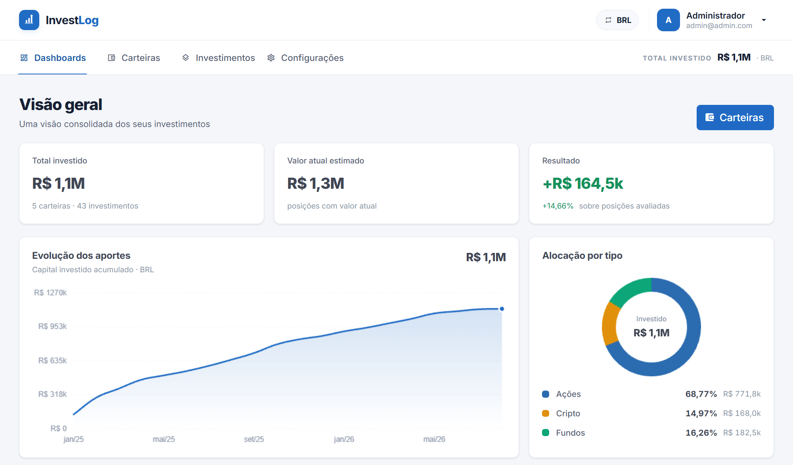

Registre seus aportes e acompanhe sua carteira evoluir
InvestLog reúne ações, fundos e criptomoedas em um só lugar, com histórico completo de cada aporte, resgates e reinvestimentos, e resultado consolidado por ativo, carteira e período.
Acesse com admin@admin.com / admin — sem cadastro necessário.

Conheça as principais funcionalidades
Gestão de carteiras
Organize ações, fundos e criptoativos em carteiras, cada uma com painel próprio: desempenho diário, melhores e piores ativos e distribuição
Dashboards de evolução
Patrimônio consolidado, evolução dos aportes e alocação por tipo, além de um painel com os resultados já realizados
Resgates e reinvestimentos
Registre resgates com lucro, custos e impostos, reinvista em outro ativo e mova investimentos entre carteiras sem perder o histórico
Histórico de transações
Cada compra, resgate e movimentação fica registrada por investimento, com preço médio e saldo atualizados
Atualização de preços
Cotações de ações e FIIs, criptoativos e do dólar atualizadas automaticamente a cada hora (requer configuração extra)
Multi moedas
Carteiras em BRL ou USD com conversão automática, e a moeda de exibição pode ser alternada em todo o sistema
Tipos e segmentos
Classifique ações por tipo e segmento e fundos pelas categorias ANBIMA, e veja a distribuição da carteira por segmento
Relatório para impressão
Gere um relatório completo dos seus investimentos, agrupado por tipo e carteira, pronto para imprimir ou salvar em PDF
Gestão de usuários
Carteiras individuais por usuário, aprovação de novos acessos, login com Google e 2FA
Imagens reais do sistema em uso
Código aberto e gratuito
InvestLog é open-source: qualquer pessoa pode usar, estudar, modificar e contribuir com o projeto. O código está disponível publicamente no GitHub, sob a licença Apache License 2.0.
Pronto para organizar seus investimentos?
Teste a demo interativa e veja como o InvestLog pode acompanhar sua carteira.
Testar demo ao vivoAcesse com admin@admin.com / admin — sem cadastro necessário.